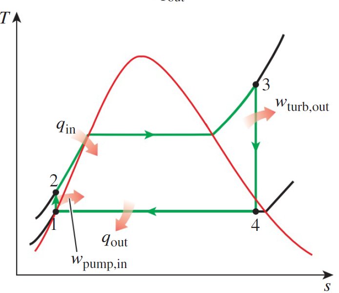

This section demonstrates how to evaluate several thermodyamic components for a Rankine Cycle. We assume components operate as steady-flow devices, meaning there is no time-rate of change in the intrinsic properties of the device. \\
The properties of substances in and around the dome shown in fig \ref{rankineTS} are not as easily calculated as those of an ideal gas. Instead, we rely on empirical data to evaluate these components.
Thermodynamic property tables contain the specific volume ($v$), energy ($u$), enthalpy ($h$), and entropy ($s$) as a function of pressure and temperature. Typically, there are 3 tables for a given substance: saturation properties (in the dome), compressed properties (above and left of the dome), and superheated properties (above and right).
Within the saturation tables, each property has 2 data points, one with the subscript f (fluid) and with subscript v (vapor). These are the bounds of saturation at that temperature.

Pumps, similair to compressors, are components which convert external work into flow work
by increasing the pressure and of the working fluid. However, the fluid at the pump inlet must be entirely fluid, x = 0. These components are also quantified by isentropic effeciencies, which
are of the same form as Eq \ref{isenEff}. Again, It is standard to assume $$\dot{Q}=\dot{q}=\Delta ke = \Delta pe = 0$$ for said components.
For pumps, there is no output component for work, so $$\dot{W}_{net} = -\dot{W}_{in}$$. Equation \ref{ebalance} then reduces to:
\[
\begin{aligned}
\dot{W}_{in} &= \sum_{out}\dot{m}\theta-\sum_{in}\dot{m}\theta\\
&= \dot{m}(h_{2}-h_{1})\\
\dot{w}_{in} &= h_2-h_1
\end{aligned}
\]
Furthermore,the fluid is typicaly incompressible so we can use the relations in Eq \ref{incompRelations} to say:
\[
\begin{aligned}
w_s &= v\Delta P\\
w_a &= \frac{w_s}{\eta_p}
\end{aligned}
\]
We can relate Eqs. \ref{ebal_pump},\ref{pump_work} to Eqs. \ref{incompRelations}, \ref{dh_incomp} which results in:
\[
\begin{aligned}
% c\Delta T &= \Delta h - v\Delta P\\
% c(T_2 - T_1) &= w_{a} - v(P_2-P_1)\\
T_{2s} &= \frac{w_a-w_s}{c}+T_1\\
h_{2s} &= w_{in}+h_1\\
\Delta s &=c \cdot ln\left(\frac{T_{2s}}{T_1}\right)
\label{pump_relation}
\end{aligned}
\]
However, the buck stops here. There are no simple analytical solutions to perform the above calculations for a turbine. As such, for turbine analysis we turn to the property tables. If the inlet conditions \(T_1,P_1,h_1,s_1\) and outlet pressure \(P_2\) are known, the process is as follows:
Finding isentropic process (\(s_{2s}=s_1\))
Use the property tables to find the row containing properties of saturation at \(P_2\)
If \(s_1\) is within the bounds of \(s_f(P_2)\) and \(s_v(P_2)\), interpolate to find the quality factor \(x = \frac{s_1-s_f}{s_v-s_s}\). IF \(s_1 > s_v(P_2)\), use the superheated tables to find \(h(P_2)\) and skip the next step .
With the \(x$\) calculated, using the same formula with \(h\) 4replacing \(s\) to find \(h_{2s}\)
Calculating work and actual process
Calculate the isentropic work with \(w_s = h_{2s}-h_1\) and actual work \(w_a = w_s\cdot \eta_T\)
Caclulate the actual \(h_2\) with \(h_{2a} = h_{1}-\eta_T\cdot w_a\)